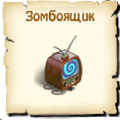

Получено: файл; исходный URL. Исходный файл без перекодирования; авторство не установлено. Страница: источник.
Зомбоящик
браузерная версия; платформа и дата редакции не установлены- Тип
- Постройка
- Версия и дата
- браузерная версия; платформа и дата редакции не установлены
Данные по источнику · браузерная версия; платформа не определена · дата редакции не установлена
Предварительно: Автоматическое чтение цифровых пиктограмм и их подписей; знак ? означает нераспознанное количество, подписи могут содержать ошибки источника. Требуется ручная сверка каждой стадии.. Требуется сверка.
- Исходные подписи и цифры в первой колонке
- [Зомбоящик] | [Доступен на 11-м уровне] | или открыть | за | 11 | [Зомбаксы] | [Стоимость постройки] | 50000 | [Опыт за каждый этап строительства] | 500 | 100 | 150 | 200 | [Суммарный опыт] | 1000
- Стадии по пиктограммам
- Стадия 1: 50 × Урожай гипносолнухов + 20 × Черничный крендель + 10 × Доска Стадия 2: 50 × Баклажадина + 30 × Золотая пыль + 10 × Металл Стадия 3: 50 × Кукурузные палочки + 10 × Стекло + 10 × Шестерня
Данные по источнику · Мой Мир (Mail.ru), историческая таблица · дата редакции таблицы не установлена
Предварительно: Текст таблицы Мой Мир. Некоторые обозначения валют и уровней на странице являются изображениями и могут быть потеряны при извлечении. Источники не обязательно независимы.. Требуется сверка.
- Название и данные первой колонки
- Зомбоящик 50000 11 ур. или 11
- Опыт, стадии, производство и модернизация
- Опыт: 1000 = 500+100+150+250 Стадии строительства: 50 Гипносолнухи + 20 Черничный крендель + 10 Доска 50 Баклажадина + 30 Золотая пыль + 10 Металл 50 Кукурузные палочки + 10 Стекло + 10 Шестерня Создает: 10 Мгновенные удобрения = 2 Черепки в томате + 1000 Монеты 10 Удобрения на 30% = 1 Грибная текила + 1 Монеты


Данные по источнику · браузерная версия; платформа не установлена · дата редакции списка не установлена
Предварительно: Прочитан список. Имена файлов пиктограмм приводятся как есть: они не гарантируют идентификацию материала. Alt-атрибуты источника содержат ошибки. Отдельная статья и дата не проверены.. Требуется сверка.
- Сведения из списка, включая имена файлов пиктограмм
- [рисунок: Zomboyashik.png] Зомбоящик Доступен на: 11 уровне Стоимость: 50 000 монет Даёт опыта: 1000 (500+100+150+250) Стадии строительства: 1. 50 гипносолнухов + 20 черничных кренделей + 10 досок 2. 50 баклажадин + 30 золотой пыли + 10 металла 3. 50 кукурузных палочек + 10 стекло + 10 шестерён Производит: 1. 2 черепков в томате + 1000 золота = 10 мгновенных удобрений 2. 1 грибная текила + 1 золото = 10 удобрений на 30%
Данные по источнику · браузерная игра; платформа страницы не уточнена · 11.01.2014 — публикация; редакция неизвестна
Предварительно: Прочитана конкретная строка; старые сведения, у источника встречаются опечатки. Возможны заимствования, независимость от других сайтов не доказана.. Требуется сверка.
- Стадии по Zommbie
- 1: 50 гипносолнухов + 20 черничных кренделей + 10 досок; 2: 50 баклажадин + 30 золотой пыли + 10 металла; 3: 50 кукурузных палочек + 10 стекла + 10 шестерни.
- Возможности и рецепты по Zommbie
- 10 мгновенных удобрений = 2 черепка в томате + 1000 монет; 10 удобрений 30% = 1 грибная текила + 1 монета (буквально у источника; требует проверки).
Данные по источнику · браузерная версия, платформа не указана · 17.04.2015
Предварительно: Самостоятельная статья прочитана; независимость от других руководств не установлена.. Требуется сверка.
- Доступ и стоимость
- 11 уровень, покупка 50 000 монет, продажа 5000 монет, 50 опыта за покупку.
- Строительство
- 1: 50 гипносолнухов + 20 черничных кренделей + 10 досок; 2: 50 баклажадин + 30 золотой пыли + 10 металла; 3: 50 кукурузных палочек + 10 стекла + 10 шестерни.
- Назначение
- Удобрения из черепков в томате и монет; удобрения на 30% из грибной текилы и монет.
Данные по источнику · историческая браузерная игра, площадка не указана · 05.05.2012 — дата публикации; дата редакции неизвестна
Предварительно: Сопоставлено по единственному точному названию; различные версии или одноимённые объекты могут различаться. Названия файлов и alt пиктограмм сохранены как подписи, не заменяют проверенную расшифровку; изображения и цены требуют ручной сверки. Независимость от zombi-ferma.ru и других сайтов не установлена.. Требуется сверка.
- Текст и пиктограммы источника
- [изображение: m_tvset.png] Доступен на: 11 уровне Стоимость: 50 000 монет Даёт опыта: 1000 (500+100+150+250) 1 стадия:50 Гипносолнухи + 20 Черничный крендель + 10 Доска; опыт: 100; 2 стадия:50 Баклажадина + 30 Золотая пыль + 10 Металл; опыт: 150; 3 стадия:50 Кукурузные палочки + 10 Стекло + 10 Шестерня; опыт: 250;ль + 10 Металл; опыт: 150; 3 стадия:50 Кукурузные палочки + 10 Стекло + 10 Шестерня; опыт: 250; Производство: 10 Мгновенные удобрения = 2 Черепки в томате + 1000 Монеты 10 Удобрения на 30% = 1 Грибная текила + 1 Монеты
Связанные сущности
нет проверенных связей — требуется сверка.
Источники
- Каталог построек: строка и пиктограммы; дата неизвестна
- Zombiemail: строка таблицы построек, часть 1, версия Мой Мир
- ZOMBIA: прочитана карточка в каталоге
- Адрес отдельной карточки, отдельный доступ не проверен
- Zommbie.at.ua: раздел 38 построек, запись 2014 года
- FatalGame, ответ 17.04.2015
- ZF.3dn: историческая карточка постройки